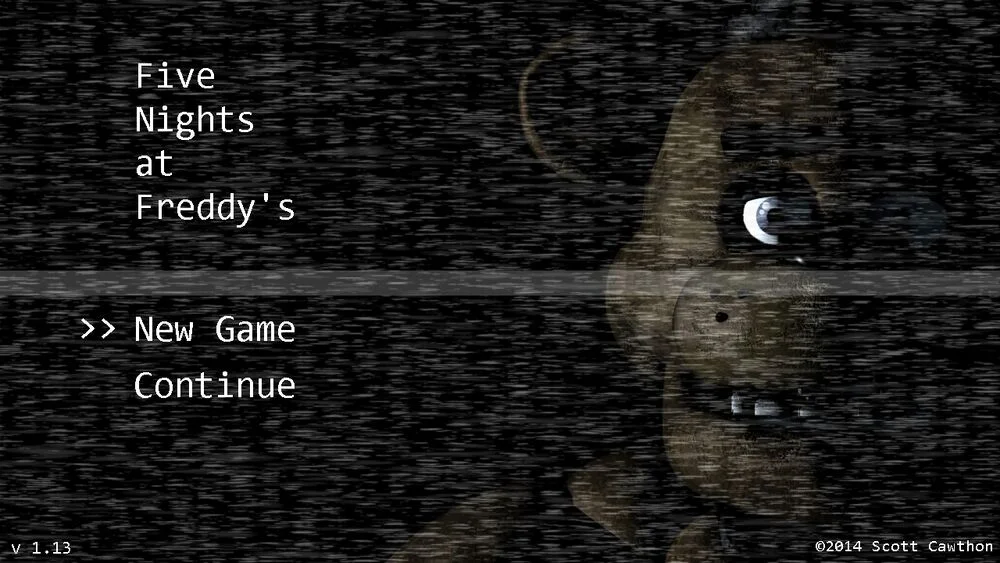
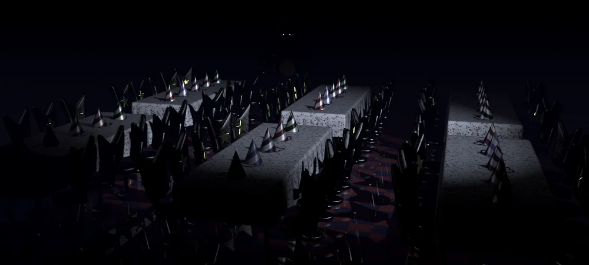
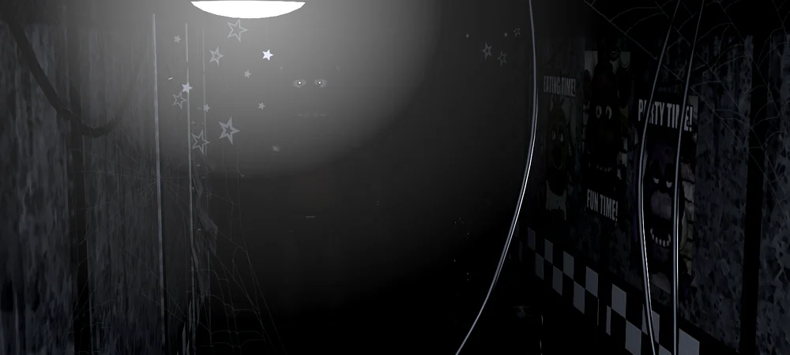

Botão de Freddy para seu modelo 3D

Freddy no menu principal
Os três animatrônicos no Palco
Freddy, Bonnie e Chica encarando a câmera
Freddy sozinho, encarando a câmera

Freddy a espreita da Área de Refeições
Freddy se escondendo nos banheiros

Freddy caminhando pelo Corredor Leste
Freddy no Canto do Corredor Leste, olhando diretamente para a câmera
Freddy Fazbear arrancando sua própria cabeça em um pôster distorcido
Freddy nas alucinações. Note as veias de um olho humano
Freddy na tela de Game Over